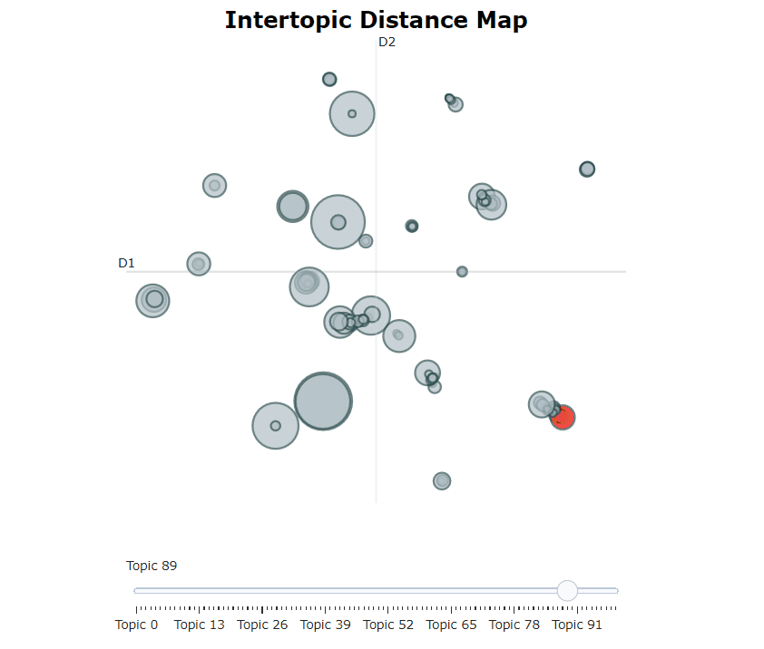
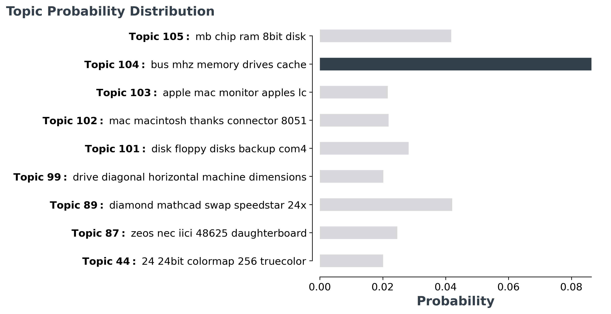

用BERTopic进行交互式主题建模¶
用BERTopic进行主题建模的深入指南
每天，企业都要处理大量的非结构化文本。从电子邮件中的客户互动到在线反馈和评论。为了处理这些大量的文本，我们将目光投向主题建模。这是一种通过识别反复出现的主题来自动从文档中提取意义的技术。 几个月前，我写了一篇关于利用BERT进行话题建模的文章。它出乎意料地轰动，我对我得到的积极反馈感到惊讶!
BERT主题建模利用 BERT 和 TF-IDF 创建易于解释的主题
我决定专注于进一步发展文章所基于的主题建模技术，即BERTopic。
BERTopic是一种主题建模技术，它利用BERT嵌入和基于类的TF-IDF来创建密集的集群，使主题易于解释，同时在主题描述中保留重要的词汇。
我现在处于这样一个阶段：BERTopic已经得到了足够的牵引和发展，我觉得它可以取代或补充其他主题建模技术，如LDA。
BERTopic BERTopic是一种主题建模技术，利用Transformer和c-TF-IDF来创建密集的集群
本文的主要目的是让你深入了解BERTopic的功能和教程，了解如何在你自己的项目中最好地应用它。
1. 安装¶
和往常一样，我们从通过 pypi安装包开始：
1 | |
要使用可视化选项，请安装以下 BERTopic：
1 | |
2. 基本用途¶
使用 BERTopic 开箱即用非常简单。你把你的文件作为一个字符串列表加载，并简单地把它传递给 fit_transform 该方法。
为了给你一个例子，下面我们将使用 20 个新闻组 数据集：
1 2 3 4 5 6 7 | |
生成了两个输出， topics . probabilities 主题中的一个值仅仅代表它被分配到的主题。另一方面，概率显示了一个文件落入任何可能的主题的可能性。接下来，我们可以通过相对频率来获取所生成的主题：
1 2 3 4 5 6 7 | |
在上面的输出中，似乎Topic-1 是最大的。-1指的是所有没有分配主题的离群值。强制将文件放在一个主题中可能会导致性能不佳。因此，我们忽略了主题-1。相反，让我们看一下生成的第二个最频繁的主题，即主题49。
1 2 3 4 5 6 7 8 9 10 11 12 | |
由于我创建了这个模型，我显然是有偏见的，但对我来说，这确实是一个连贯的、容易解释的话题！我认为，这是个很好的例子。
语言¶
在引擎盖下，BERTopic 用于 sentence-transformers 为您传递的文档创建嵌入。默认情况下，BERTopic被设置为使用英语模型，但它支持任何存在嵌入模型的语言。
您可以通过简单地设置 language BERTopic的语言参数来选择语言：
1 2 | |
当您选择语言时， sentence-transformers 将加载相应的模型。这通常是一个支持多种语言的多语种模型。
说到这里，如果你的文件中有混合的语言， 你可以使用BERTopic(language="multilingual") 来选择一个支持超过50种语言的模型!
嵌入模型¶
要选择不同的预先训练的嵌入模型，我们只需将变量 embedding_model 指向相应的sentence-transformers模型，即可通过 BERTopic 传递它：
1 2 | |
单击 此处 查看支持的sentence transformers列表。
保存/加载 BERTopic模型¶
我们可以通过调用轻松保存训练好的 BERTopic 模型 save ：
1 2 3 | |
然后，我们可以将模型加载到一行中：
loaded_model = BERTopic.load("my_model")
3. 可视化¶
现在，我们已经涵盖了基础知识，并生成了我们的主题，我们将它们可视化 有了对主题的整体了解，我们就可以对主题模型的质量产生一个内部的感知。
可视化主题¶
为了可视化我们的主题，我从 LDAvis 中汲取了灵感，它是一个用于可视化LDA主题模型的框架。它允许你互动地探索主题和描述它们的词。
为了在 BERTopic 中实现类似的效果，我使用 Umap 将基于类的 TF-IDF 主题表示嵌入到 2D 中。然后，使用Plotly来创建一个交互式视图，这只是一个简单的可视化维度问题。
要做到这一点，只需调用 model.visualize_topics() 即可可视化我们的主题：

一个交互式的Plotly图将被生成，可以如上面的动画所示。每个圆圈表示一个主题，其大小是该主题在所有文件中的频率。
要自己尝试一下，请查看 此处 的文档，在那里您可以找到交互式版本！
可视化概率¶
对于每个文档，我们也可以将该文档属于每个可能的主题的概率可视化。为此，我们使用 probabilities 运行 BERTopic 后的变量来了解该模型对于该实例的自信程度。
由于有太多的主题需要可视化，我们将最可能的主题的概率分布可视化。
1 | |

对于此文档，模型在选择正确的主题时遇到更多困难，因为它们是多个主题，彼此非常相似。
4. 主题减少¶
正如我们之前看到的，可能会产生数百个主题。有时，这可能只是你无法探索的问题，或者是一个过于细化的解决方案。 幸运的是，我们可以通过合并那些最相似的话题对来减少话题的数量，如c-TF-IDF向量之间的余弦相似度所示。
下面，我将介绍三种方法，以减少由 BERTopic 导致的主题数量。
手动主题缩减¶
启动 BERTopic 模型时，您可能已经对文档中可能涉及的主题数量有感觉。
通过设置 nr_topics 变量，BERTopic 将找到最相似的主题对并合并它们，从最不频繁的主题开始，直到我们达到 nr_topics ：
1 2 | |
然而，建议保持一个适当的高值，例如50，以防止不应该合并的主题被合并。
自动主题缩减¶
如上所述，如果您将主题合并为低 nr_topics 主题，将被迫合并，即使它们实际上可能并不相似。
相反，只要找到一对相似度超过0.9的主题，我们就可以迭代地减少主题的数量。
要使用此选项，我们只需在训练模型之前将 nr_topics 设置为"auto" ：
1 2 | |
训练后减少主题¶
如果你在花了很多时间的训练后，留下了太多的主题怎么办？如果只是为了试验主题的数量而重新训练你的模型，那就太可惜了。
幸运的是，我们可以在训练完BERTopic模型后减少话题的数量。这样做的另一个好处是，你可以在知道实际创建了多少个主题之后再决定主题的数量：
1 2 3 4 5 6 7 | |
使用上面的代码，我们在训练完模型后将主题的数量减少到30个。这样你就可以根据你的使用情况来调整主题的数量。
5. 主题表示¶
主题通常由一组词来表示。在BERTopic中，这些词是使用基于类的TF-IDF从文档中提取的。 有时，你可能对所创建的主题的表示方法不满意。当你选择只有1-gram词作为表示时，这是有可能的。也许你想尝试不同的n-gram范围，或者你有一个自定义的向量器，你想使用。
为了在训练后更新主题表示，我们可以使用函数 update_topics 用c-TF-IDF的新参数更新主题表示：
1 2 | |
我们也可以使用一个自定义的CountVectorizer来代替。
1 2 3 4 | |
6. 自定义嵌入¶
为什么要把我们自己限制在公开可用的预训练的嵌入上？你可能有非常特殊的数据，你为其创建了一个嵌入模型，但你无法找到预训练的可用数据。
Transformer¶
要使用你自己训练的任何嵌入模型，你只需要用该模型嵌入你的文档。然后你可以传入嵌入，BERTopic会做剩下的事情：
1 2 3 4 5 6 7 8 9 10 | |
如上所述，我们使用SentenceTransformer模型创建嵌入。您也可以使用 🤗 transformers Doc2Vec ，或任何其他嵌入方法。
TF-IDF¶
既然如此，为什么要把自己局限在 Transformer模型上呢？统计模型，如TF-IDF，仍然存在是有原因的。它们开箱即用，无需太多的调整。
正如您可能猜到的，也可以在文档上使用 TF-IDF 并将其用作 BERTopic 的输入。我们只是创建一个 TF-IDF 矩阵，并通过它 fit_transform ：
1 2 3 4 5 6 7 8 9 10 | |
在这里，你可能会注意到，创建嵌入是相当快的, 而fit_transform 是相当缓慢的。这是可以预期的，因为降低一个大的稀疏矩阵的维度需要一些时间。使用变换器嵌入的情况正好相反：创建嵌入很慢， fit_transform 是相当快的。
感谢您阅读！¶
如果你和我一样，对人工智能、数据科学或心理学充满热情，请随时在 LinkedIn 添加我， 或者在推特上关注我。
凡本网注明"来源：XXX "的文/图/视频等稿件，本网转载出于传递更多信息之目的，并不意味着赞同其观点或证实其内容的真实性。如涉及作品内容、版权和其它问题，请与本网联系，我们将在第一时间删除内容！
作者: Maarten Grootendorst
来源： https://towardsdatascience.com/interactive-topic-modeling-with-bertopic-1ea55e7d73d8